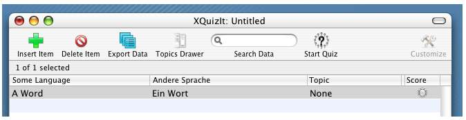

VocableTrainerX provides many of its most-frequently-used controls in a toolbar. The default VocableTrainerX toolbar:
|  |
Several of these commands appear in the application menus, with keyboard equivalents for users who prefer to use them.
Toolbar items (and menu items) that are not appropriate in a particular context are deactivated and dimmed-out.
A status bar informs you how many entries the table contains, and how many items are selected.
VocableTrainerX has a feature for exporting tables of vocabulary data to a format (Comma-separated values, CSV) that can be imported into other applications, or back into VocableTrainerX. The toolbar contains a button that allows you to export your data in this format. |
| The "File" menu contains items for both exporting and importing CSV data out of and into VocableTrainerX. Prior versions of VocableTrainerX do not produce binary files that are compatible with this version; however, recent prior versions supported export to CSV (although imperfectly), and data may be upgraded by using this feature of the earlier version and importing the results into the new version. |